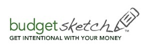
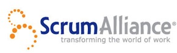
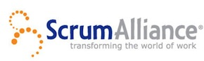
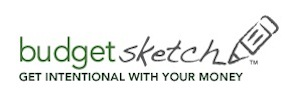
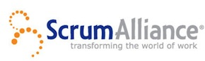

Location
Microsoft Office
4605 Duke Dr Ste 800
Mason, OH 45040-7627
View Larger Map

Discussion Group
Sponsors
We'd like to thank all our sponsors for helping make this event possible!
 



Microsoft Office
4605 Duke Dr Ste 800
Mason, OH 45040-7627
We'd like to thank all our sponsors for helping make this event possible!


As the Agile project management process sweeps across the software industry, businesses not understanding the details are being left behind. The Cincinnati Day of Agile is an opportunity to understand what Agile is all about and hear from people that have used it, succeeded with it and have the results to prove it.
At this one day event on Saturday, May 15th, a host of industry experts will be on hand to offer their hard won experiences. By bringing together a mix of developers, managers, Agile professionals, and technologists, the Cincinnati Day of Agile also provides excellent networking opportunities for its attendees. We hope you will join us to learn how Agile can make your software development process more effective, productive, and profitable.
The talks being presented during the day.
| Opening Remarks | Phil Japikse |
| Agile Flavors | Mark Windholtz |
| Agile Success Story | Sujit Upadhye |
| Engineering Practices | Jim Weirich |
| Estimation | Mike Eaton |
| 2 Things to do tomorrow to be more agile | Brian Prince |
| Lunch and Panel Discusion | |
| Why Agile Fails | Chris Nelson & Ed Sumerfield |
| Enterprise Agility | Phil Japikse |
| Budgeting an Agile Project | Matt Van Vleet |
| Retrospectives | Joe O'Brien |
| Business Practices | Mark Windholtz |
| Closing remarks and raffle | |
| Earn 7 PDU's | |
Mark Windholtz first encountered ExtremeProgramming in 1999 and immediately added Agile practices to his development process to get software projects done better and faster. Through his company, AgileDNA LLC, he has advised Agile teams for Commercial, Non-Profit, Start-up, and Defense projects. Major clients include the AgileAlliance, and the ScrumAlliance. As the founder of the Cincinnati Agile Roundtable, Mark has be instrumental in promoting the Agile philosopy for many years.
The term "Agile" includes a number of software processes and frameworks. This talk will introduce at a high-level, what Agile is and the major varieties of Agile.
While the technical team is keeping things moving smoothly along, the business part of the team also has work to do. This talk will cover those practices.

Versatile and disciplined IT leader with experience in mentoring, empowering, delegating and motivating team members to build a cohesive team. Sujit has over 15 years of experience in developing complex software applications to meet the organization’s growth requirements and managing stake holder expectations.
Taking a team and introducing Agile is fun, in a pulling teeth kind of way. Over many months, and during a critical project, our team transformed from an effective group of skilled engineers to an effective group of skilled engineers that produced the right business functionality at the right time. We are not perfect but we are better every day.
Jim Weirich is the Chief Scientist for EdgeCase LLC, a Rails development firm located in Columbus Ohio. Jim has over twenty-five years of experience in software development. He has worked with real-time data systems for testing jet engines, networking software for information systems, and image processing software for the financial industry. Jim is active in the Ruby community and has contributed to several Ruby projects, including the Rake build system and the RubyGems package software.
The three most important things for an agile development team are: feedback, feedback and feedback. This feedback allows an agile team to respond quickly to changes while maintaining a high level of quality. In order to achieve this level of feedback, the team follows a disciplined set of agile practices. This talk will focus on the engineering practices and demonstrate how they work together.
Michael Eaton is an independent consultant who lives in southern Michigan. Since 1994, Mike has been designing and implementing high quality, robust solutions using Microsoft technologies including .NET and SQL Server. He speaks at regional events and user groups, runs the Kalamazoo X Conference and helps with the Ann Arbor Give Camp. He is a 2009 C# MVP. When not working on projects or spending time with his family, he enjoys blogging, playing his XBox 360 and hanging out with friends.
How are your software estimation skills? If your answer was "Dude, I'm terrible at estimation", you're not alone. Being able to accurately estimate software is a skill every developer should have but research and statistics show it's a skill few actually possess. In this session, we'll talk about why we have so much trouble with this key skill and then discuss some strategies for improving our software estimation chops.
Brian H. Prince is an Architect Evangelist for Microsoft. He gets super excited whenever he talks about technology, especially cloud computing, patterns, and practices. His job is to help customers strategically leverage MS technology, and help them bring their architecture to a super level. In a past life Brian was a part of super startups, super eting firms, and super consulting firms. Much of his super architecture background includes building super scalable applications, application integration, and award winning web applications. All of them were super. Further, he is a co-founder of the non-profit organization CodeMash (www.codemash.org). He speaks at various regional and national technology events including TechEd. He only wishes his job didn't require him to say "super" so much. Brian holds a Bachelor of Arts degree in Computer Science and Physics from Capital University, Columbus, Ohio. He is also a zealous gamer. For example, he is a huge fan of Fallout 3.
Becoming more agile is a journey, not a destination. The first few steps on that journey can be challenging. You have to start changing your culture, but where? We will look at two simple things you can start doing the next day to start to turn the battleship.

Ed has been developing enterprise solutions for 25 years. His primary focus is software and architectural excellence with a specialty in Agile development techniques.
Chris Nelson is developer and co-founder of Gaslight Software. He has been doing software development for 15 years at companies ranging in size from Fortune 500 to startup using J2EE and more recently, ruby. He has published several articles and spoken at numerous software development conferences including eRubycon, JavaOne, OSCON, Railsconf and Rubyconf, as well as local Java and Ruby user groups. He lives in Cincinnati, Ohio, with his wife, 4 children, and 2 cats.
So you are ready to try something new, ready to take on what appears to be an improvement in the processes you use today. How many projects fail to change their organizations the first time? What can you do to prepare for the change and what signs should you be looking for along the way. Let's explore failure before it happens.

Phil Japikse has been working with .Net since the first betas, and developing software for over 20 years. Phil is a Microsoft MVP and also holds MCSD, MCDBA, CSM, and CSP certifications. Phil's experience includes Smart Client/WPF, ASP.NET/MVC, and eCommerce as well as mentoring teams in .Net, SQL Server, and Agile. Phil is a contributing author to www.nPlus1.org, founder and president of Agile Conferences, Inc, teaches custom classes, speaks at national and regional events, and is a passionate member of the developer community (serving as Lead Director for the Cincinnati .Net User's Group). Phil works as a Principal Consultant with Pinnacle Solutions Group, Inc. (www.pinnsg.com), is a Firefighter/Paramedic, and a volunteer for the Ski Patrol. You can follow Phil on twitter via www.twitter.com/skimedic and read his blog at www.skimedic.com/blog.
Scrum and XP have found a strong following in the development community. But most non-development groups (such as Web Administrators, Production Support, Security, Testing, and Users/Stake Holders) inside the enterprise are far from agile, nor are they trying to move to be more agile. This session uses real experiences from large enterprise development projects to show how to effectively work with those teams. Instead of trying to "convert" them, we discuss strategies to adapt to their needs while remaining agile in the development realm.

Mr. Van Vleet holds a Bachelor of Science Degree in Management Information Systems from Ohio University. He joined Pillar in 2005 as Vice President of Fulfillment for the Ohio Valley Region after years of notable accomplishments. Matt has developed a testing practice focused on functional test automation and application performance management. Mr. Van Vleet founded a company, Solstice Software, that wrote Automated Unit and Integration Testing Products and continues to push the envelope of what is possible with test automation. Within Pillar he is one of the key innovators around our approach, Speed To Value, focusing on the critical areas of project management practices, requirements management, and test driven development. Due to Matt's skills and experience, he has developed Pillar's Practice Management model that maximizes the impact of productivity by enforcing those proven concepts and training.
How do agile projects accurately forecast their budget when they are typically just a bunch of hippies coding without requirements or documentation? Waterfall projects are obviously much better at budgeting with all of the traditional up front design and planning, right? Anyone who has been on a waterfall project can see that this is a complete fallacy. Good agile projects are typically very accurate with regards to budgeting. This session will explore some budgeting techniques for agile projects including leveraging a Sprint 0, developing Value Stories, and using technical Spikes. We'll cover these topics with interactive examples and also identify where we think the industry needs to go with budgeting on agile projects.
Joe is a father, speaker, author and developer. Before helping found EdgeCase, LLC, Joe was a developer with ThoughtWorks and spent much of his time working with large J2EE and .NET systems for Fortune 500 companies. He has spent his career as a developer, project manager, and everything in between. Joe is a passionate member of the open source community. He co-founded the Columbus Ruby Brigade and helped organize the Chicago Area Ruby Users Group. His passions are Agile Development in the Enterprise, Ruby, and demonstrating to the Fortune 500 the elegance and power of this incredible language.